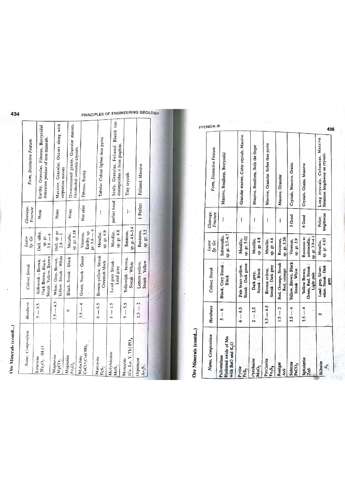

Q139: Spatial Database Architecture: The Geodatabase as the Engine of Modern GIS
In Geographic Information Science (GIScience), enterprise data modeling, and spatial database management, spatial databases that store, manage, and query geographic datasets within a unified relational or object-relational framework are universally known as Geodatabases (Rigaux et al., 2002; Shekhar & Chawla, 2003; Bangar, p. 224).

What is a Geodatabase?
The term geodatabase (short for geographical database) represents the premier native data model of modern GIS:
- Unified Storage: In legacy GIS (such as shapefiles or CAD files), spatial coordinate geometry was stored in separate binary graphics files while non-spatial attributes were stored in external dBase tables (.dbf). A geodatabase unites geometry and attributes inside a single object-relational database management system (ORDBMS).
- Spatial Data Types: Geometry is stored directly in dedicated spatial columns as binary BLOBs compliant with the Open Geospatial Consortium (OGC) Simple Feature Access standard (e.g.,
ST_Geometry,GEOMETRY, or Well-Known Binary, WKB). - Spatial Indexing: Incorporates specialized multi-dimensional spatial indexes (such as R-trees, Quadtrees, or Hilbert space-filling curves) that allow the database to query millions of spatial records in milliseconds using spatial predicates (e.g.,
ST_Intersects,ST_Contains,ST_Within). - Intelligent Integrity Rules: Enforces business rules, attribute validation domains (e.g., permissible iron grades $45.0 - 68.5\%$), subtypes, topological connectivity rules, and network tracing models.

In professional geological survey organizations (such as the Geological Survey of India, GSI, and state mining directorates), three architectural tiers of geodatabases are deployed:
| Geodatabase Type | Underlying Database Engine | Storage Capacity | Multi-User / Concurrency Support | Primary Application |
|---|---|---|---|---|
| File Geodatabase (FGDB) | Proprietary high-performance folder of binary files | $1\text{ TB}$ per table (expandable to $256\text{ TB}$) | Single-editor; multiple simultaneous readers. | Standard desktop GIS project storage, high-speed regional geological mapping. |
| Enterprise Geodatabase (Multi-user) | RDBMS engines (PostgreSQL/PostGIS, Oracle Spatial, Microsoft SQL Server) | Unlimited (governed by server disk array) | Full multi-user concurrent editing with versioning, long transactions, and replication. | National mineral inventories, statewide mining cadastre, real-time disaster management portals. |
| Personal Geodatabase (Legacy) | Microsoft Access Jet Engine (.mdb) | $2.0\text{ GB}$ total limit | Single-user only. | Historical legacy projects (deprecated in modern 64-bit GIS). |
Spatial Predicates and Topological Operators
Modern geodatabases leverage Spatial SQL (ISO/IEC 13249-3) to perform computational geometry directly inside SQL queries:
This query executes an instantaneous spatial intersection check between thousands of mining polygon boundaries and protected forest reserves without requiring manual graphic overlays.
- (A) Geodatabase
- (B) Mono database
- (C) Concurrent database
- (D) None of these
A Geodatabase is the definitive textbook and industry term for a spatial database (Bangar, p. 224; Shekhar & Chawla; Rigaux et al.). It is a relational database management system (RDBMS) extended with spatial data types, spatial indexing, topological relationships, and spatial querying capabilities to store geographic geometries alongside alphanumeric attributes.
"Mono database" is a completely fictitious term fabricated as an examination distractor. It has no meaning in spatial data management or computer science.
"Concurrent database" refers to any multi-threaded database system that allows multiple users or transactions to read and write records simultaneously using ACID locking protocols (concurrency control). It describes an operational transaction mechanism, not a spatial database designed for geographic data.
Because Option (A) is the exact, authoritative definition, Option (D) is incorrect.
| System Feature | Standard Relational Database (RDBMS) | Spatial Database / Geodatabase |
|---|---|---|
| Supported Data Types | Numbers, text strings, dates, booleans, blobs. | All standard types + Spatial geometries: Points, Lines, Polygons, Multipoints, GeometryCollections, Rasters. |
| Indexing Mechanisms | 1D B-tree, Hash index. | 2D/3D Multi-dimensional Spatial Indexes: R-Tree, R*-Tree, Quadtree, Hilbert curves. |
| Standard Query Language | Standard SQL (e.g. WHERE Salary > 50000). |
Spatial SQL (OGC / ISO SQL/MM): ST_Buffer, ST_Distance, ST_Intersects, ST_Contains. |
| Topological Integrity | Relational foreign keys and unique constraints. | Enforces spatial rules: "Must not overlap", "Must be inside", "Must not have dangles". |
A mining exploration geodatabase contains two tables:
boreholes (Point geometry, field fe_grade) and lithology (Polygon geometry, field rock_type). Write the standard PostGIS Spatial SQL query to select all boreholes with an iron grade $> 60.0\%$ that fall geographically inside polygons classified as "Banded Iron Formation".
```sql SELECT B.borehole_id, B.fe_grade, L.rock_type, B.geom FROM boreholes B JOIN lithology L ON ST_Within(B.geom, L.geom) WHERE B.fe_grade > 60.0 AND L.rock_type = 'Banded Iron Formation'; ``` Technical Explanation: The spatial predicate function
ST_Within(B.geom, L.geom) utilizes the spatial R-tree index on the geodatabase tables to evaluate point-in-polygon containment instantaneously.
An R-Tree spatial index organizes spatial objects by their Minimum Bounding Boxes (MBR: $[X_{\text{min}}, Y_{\text{min}}, X_{\text{max}}, Y_{\text{max}}]$). A query box $Q = [100, 100, 200, 200]$ is executed against four feature MBRs: MBR 1: $[50, 50, 90, 90]$; MBR 2: $[150, 150, 180, 180]$; MBR 3: $[190, 190, 250, 250]$; MBR 4: $[300, 300, 400, 400]$. Identify which features pass the primary filter stage of the spatial index.
1. Condition for two 2D bounding boxes to intersect: $$\text{Intersect} \iff (X_{\text{min1}} \le X_{\text{max2}}) \land (X_{\text{max1}} \ge X_{\text{min2}}) \land (Y_{\text{min1}} \le Y_{\text{max2}}) \land (Y_{\text{max1}} \ge Y_{\text{min2}})$$ 2. Check each candidate against $Q[100, 100, 200, 200]$: - MBR 1: $X_{\text{max}} = 90 < 100$ → No overlap (Completely outside to West). - MBR 2: $[150, 150, 180, 180]$ → Lies entirely within $[100, 100, 200, 200]$ → Passes primary filter! - MBR 3: Overlaps from $[190, 190]$ to $[200, 200]$ → Passes primary filter! - MBR 4: $X_{\text{min}} = 300 > 200$ → No overlap (Completely outside to East). Features 2 and 3 pass the primary filter and proceed to the exact geometric test stage.
A statewide high-resolution LiDAR elevation dataset contains $18\text{ GB}$ of vector point records. (a) Can this dataset be stored in a single conventional ESRI Shapefile? (b) Can it be stored in a standard File Geodatabase (FGDB)?
1. Shapefile Assessment: Conventional shapefiles use a 32-bit offset index file (.shx) which imposes a strict physical file size limit of $2.0\text{ GB}$ per component file (.shp, .dbf). Attempting to load $18\text{ GB}$ results in immediate overflow error. Cannot be stored in a Shapefile. 2. File Geodatabase Assessment: Standard File Geodatabase tables have a default maximum capacity of $1.0\text{ TB}$ ($1024\text{ GB}$) per table (and can be configured to hold up to $256\text{ TB}$). Easily accommodated in a File Geodatabase with $98\%$ headroom remaining.
The DE-9IM model classifies topological relationships between geometries $A$ and $B$ by evaluating the intersection dimension ($0\text{ for point}, 1\text{ for line}, 2\text{ for area}, F\text{ for empty}$) between their Interiors ($I$), Boundaries ($B$), and Exteriors ($E$): $$\text{Matrix: } \begin{bmatrix} \dim(I(A) \cap I(B)) & \dim(I(A) \cap B(B)) & \dim(I(A) \cap E(B)) \\ \dim(B(A) \cap I(B)) & \dim(B(A) \cap B(B)) & \dim(B(A) \cap E(B)) \\ \dim(E(A) \cap I(B)) & \dim(E(A) \cap B(B)) & \dim(E(A) \cap E(B)) \end{bmatrix}$$ If two mining concession polygons share only a common 1D boundary line and their interiors do not overlap, what is the value of $\dim(I(A) \cap I(B))$ and $\dim(B(A) \cap B(B))$?
1. $\dim(I(A) \cap I(B)) = F$ (False / Empty set, because polygon interiors do not overlap). 2. $\dim(B(A) \cap B(B)) = 1$ (1-Dimensional line, because they share a linear boundary). This matches the standard OGC topological predicate
ST_Touches(A, B) = TRUE.
In a geodatabase schema for coal prospecting, a Range Attribute Domain named
Volatile_Matter_Domain is defined with minimum value $12.0\%$ and maximum value $45.0\%$. A junior field geologist enters an assay value of $52.4\%$. How does the geodatabase engine respond?
The geodatabase schema validation engine enforces domain integrity constraints. Entering $52.4\%$ violates the defined range ($12.0 - 45.0\%$). The geodatabase immediately flags a Domain Validation Error and prevents the record from being committed until a valid value within the specified range is provided.
In a statewide mining administration enterprise geodatabase, two geologists concurrently edit the boundary of Lease Block "X" off the Parent
DEFAULT version:
- Geologist A edits Version A and posts changes at $11:00\text{ AM}$.
- Geologist B edits Version B and attempts to post changes at $11:30\text{ AM}$.
Describe the automated geodatabase version reconciliation process that resolves the edit collision.
1. When Geologist B attempts to post, the geodatabase versioning engine detects that the
DEFAULT version has been modified since Version B was created.
2. The engine executes automated Reconciliation, comparing the Delta tables (Adds and Deletes tables) of Version B against the updated DEFAULT.
3. Because both editors modified the exact same feature (Lease Block "X"), a Feature-Level Conflict is flagged.
4. The system presents the conflict to the administrator to choose between: (a) Keep Version A edits, (b) Keep Version B edits, or (c) Merge geometry interactively before completing the Post operation.
A modern geodatabase stores spatial coordinates in high-precision 64-bit IEEE double floating-point numbers ($53\text{ bits of mantissa}$, providing $\approx 15 - 17\text{ significant decimal digits}$). In a UTM projection where Easting coordinates are on the order of $10^6\text{ meters}$, calculate the theoretical spatial resolution (smallest distinguishable displacement) supported by high precision.
1. Significant digits: 16 digits. 2. With $1,000,000\text{ m}$ (7 digits before the decimal), there remain $16 - 7 = 9\text{ decimal places}$: $$\Delta s \approx 10^{-9}\text{ meters} = 1.0\text{ nanometer}$$ Modern high-precision geodatabases can resolve spatial positions down to sub-millimeter / nanometer precision, eliminating historical snapping drift.
An underground manganese mine ventilation circuit is modeled as a Geometric Network inside an enterprise geodatabase consisting of 60 edge features (mine drifts, shafts) and 45 junction features (intersections, ventilation doors, exhaust fans). A trace solver is executed from the main intake portal to locate all connected downstream drifts. If one ventilation door feature has its attribute set to
Status = 'Closed', explain how the network solver utilizes the geodatabase connectivity table.
1. The geodatabase maintains an internal binary Topological Index Table linking edge and junction identifiers. 2. The geometric network trace algorithm traverses adjacent edges via common junction IDs. 3. When it reaches the junction with
Status = 'Closed', the solver treats the junction as an active Network Barrier, halting traversal along that branch and redirecting flow exclusively through alternate connected open drifts.